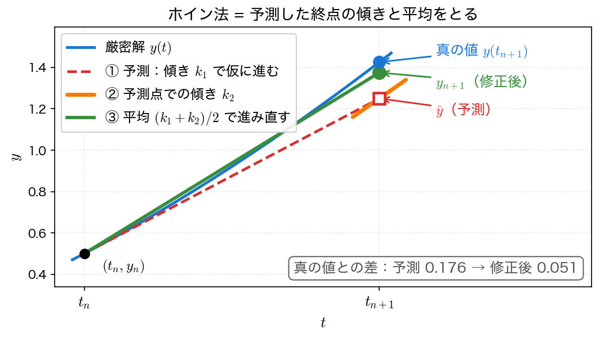
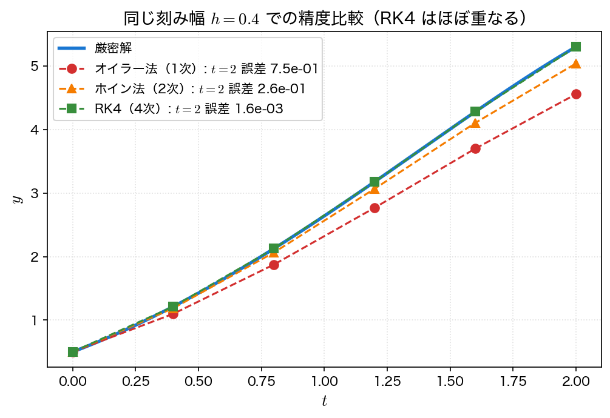
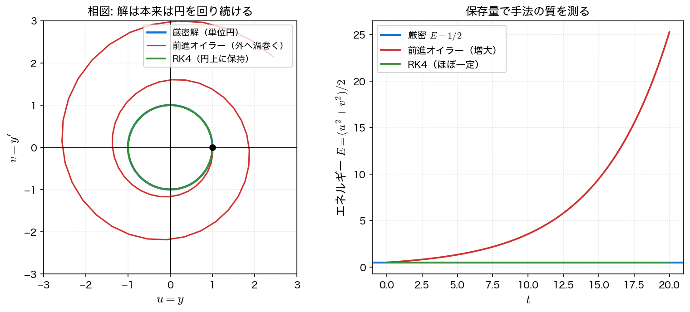

ルンゲ＝クッタ法
ルンゲ＝クッタ法（Runge–Kutta method）は、1ステップの中で右辺 \(f\) を複数の点で評価し、それらを組み合わせることで高い精度を得る1段法の総称である。前進オイラー法が始点の傾きだけで一歩進んだのに対し、途中や終点の傾きも使うことでテイラー展開の高次の項まで合わせ込む。実用上もっとも広く使われる4次のルンゲ＝クッタ法（RK4）は、この回の中心的な道具である。
動機：高階の導関数を使わずに精度を上げる
前進オイラー法の精度を上げる素朴な方法は、テイラー展開をもっと先まで使うことである。
しかし \(y'' = \dfrac{d}{dt} f(t, y) = f_t + f_y f\) のように、高階の導関数を求めるには \(f\) の偏微分が必要で、問題ごとに手間がかかる。
ルンゲ＝クッタ法の発想は、高階の導関数を使う代わりに、\(f\) を区間内の複数点で評価し、その重み付き平均を傾きとして使うことである。評価点と重みをうまく選べば、テイラー展開の高次項と一致させられる。\(f\) の評価だけで高次精度が得られるため、汎用性が高い。
2次：ホイン法（改良オイラー法）
最も簡単なルンゲ＝クッタ法が、2次のホイン法（Heun's method, 改良オイラー法）である。予測子・修正子（predictor–corrector）の考え方で説明できる。
- 予測: まず始点の傾き \(k_1 = f(t_n, y_n)\) で、前進オイラー法のように終点を仮に予測する：\(\tilde y = y_n + h\,k_1\)。
- 修正: 予測した終点での傾き \(k_2 = f(t_n + h, \tilde y)\) を求める。始点と終点の傾きの平均で改めて一歩進む。
始点の傾きだけでなく終点の傾きも取り入れることで、曲線の曲がりを一次補正できる。局所打ち切り誤差は \(O(h^3)\)、大域誤差は \(O(h^2)\) で、2次精度である。\(f\) の評価は1ステップにつき2回。

4次：古典的ルンゲ＝クッタ法（RK4）
実用上の標準が、4次の古典的ルンゲ＝クッタ法（classical RK4）である。1ステップの中で傾きを4回評価する。
- \(k_1\) は始点の傾き、\(k_2, k_3\) は中点での傾き（2通りの予測）、\(k_4\) は終点での傾き。
- 重み \(1 : 2 : 2 : 1\) で平均する。これは数値積分のシンプソン則に対応した重みで、テイラー展開を \(h^4\) の項まで正確に再現する。
局所打ち切り誤差は \(O(h^5)\)、大域誤差は \(O(h^4)\) で、4次精度である。\(f\) の評価は1ステップにつき4回と多いが、刻みを細かくする代わりに次数を上げる方が、同じ精度をはるかに少ない総評価回数で達成できる（精度と収束次数参照）。

サンプルコード
例題1を RK4 で \(h = 0.2\) として解く。オイラー法のサンプルと同じ問題・同じ刻みなので、誤差を直接比べられる。プログラムは euler.c と同じ骨格で、1ステップの関数を euler_step から rk4_step に差し替えてある。ほかに違うのは、出力ファイル名・表の見出し・数値解の表示桁数だけである。
#include <stdio.h>
#include <math.h>
/* 例題1: y' = y - t^2 + 1, y(0) = 0.5, t in [0,2] */
/* 厳密解: y(t) = (t+1)^2 - 0.5 e^t */
double f(double t, double y) { return y - t*t + 1.0; }
double exact(double t) { return (t+1.0)*(t+1.0) - 0.5*exp(t); }
/* 古典的 RK4 の1ステップ: y_n から y_{n+1} を返す */
double rk4_step(double t, double y, double h)
{
double k1 = f(t, y);
double k2 = f(t + h/2.0, y + h/2.0*k1);
double k3 = f(t + h/2.0, y + h/2.0*k2);
double k4 = f(t + h, y + h*k3);
return y + h/6.0*(k1 + 2.0*k2 + 2.0*k3 + k4);
}
int main(void)
{
double a = 0.0, b = 2.0, h = 0.2;
int N = (int)((b - a)/h + 0.5);
double y = 0.5; /* 初期値 y(0) */
FILE *fp = fopen("rk4.dat", "w"); /* 作図用データ */
if (fp == NULL) { perror("rk4.dat"); return 1; }
fprintf(fp, "# t y_rk4 y_exact error\n");
printf(" t y_rk4 y_exact |error|\n");
printf("---------------------------------------------------\n");
for (int i = 0; i <= N; i++) {
double t = a + i*h;
double ye = exact(t);
printf("%4.1f %13.9f %12.8f %10.3e\n", t, y, ye, fabs(y - ye));
fprintf(fp, "%.10e %.10e %.10e %.10e\n", t, y, ye, fabs(y - ye));
y = rk4_step(t, y, h); /* 1ステップ進める */
}
fclose(fp);
return 0;
}
コンパイル・実行:
実行結果：
t y_rk4 y_exact |error|
---------------------------------------------------
0.0 0.500000000 0.50000000 0.000e+00
0.2 0.829293333 0.82929862 5.288e-06
0.4 1.214076211 1.21408765 1.144e-05
0.6 1.648922017 1.64894060 1.858e-05
0.8 2.127202685 2.12722954 2.685e-05
1.0 2.640822693 2.64085909 3.639e-05
1.2 3.179894170 3.17994154 4.737e-05
1.4 3.732340073 3.73240002 5.994e-05
1.6 4.283409498 4.28348379 7.429e-05
1.8 4.815085695 4.81517627 9.057e-05
2.0 5.305363001 5.30547195 1.089e-04
同じ \(h = 0.2\) で、前進オイラー法の最終誤差 \(4.4\times10^{-1}\) に対し、RK4 は \(1.1\times10^{-4}\) である。刻みは同じでも誤差は約4000分の1になっており、次数の差が桁違いの精度差を生むことが分かる。
可視化
rk4.c は同じ値を rk4.dat にも書き出す（1列目が \(t\)、2列目が数値解、3列目が厳密解、4列目が誤差）。オイラー法のページの euler.c が作る euler.dat は同じ問題・同じ刻み幅なので、並べれば精度の差が直接見える。
import numpy as np
import matplotlib.pyplot as plt
t, y_rk4, y_exact, err_rk4 = np.loadtxt("rk4.dat", unpack=True)
_, y_eul, _, err_eul = np.loadtxt("euler.dat", unpack=True)
fig, axes = plt.subplots(1, 2, figsize=(11, 4.2))
ax = axes[0]
ax.plot(t, y_exact, "-", lw=2, label="exact")
ax.plot(t, y_eul, "s--", ms=5, label="forward Euler")
ax.plot(t, y_rk4, "o--", ms=5, label="RK4")
ax.set_xlabel("$t$")
ax.set_ylabel("$y$")
ax.set_title("same $h = 0.2$, different order")
ax.legend()
ax = axes[1]
ax.semilogy(t[1:], err_eul[1:], "s-", ms=5, label="forward Euler")
ax.semilogy(t[1:], err_rk4[1:], "o-", ms=5, label="RK4")
ax.set_xlabel("$t$")
ax.set_ylabel("$|y_n - y(t_n)|$")
ax.set_title("RK4 is about $10^4$ times more accurate")
ax.grid(alpha=0.3)
ax.legend()
fig.tight_layout()
fig.savefig("rk4.png", dpi=150)
plt.show()
実行:
cc -O2 -Wall -o euler euler.c -lm && ./euler
cc -O2 -Wall -o rk4 rk4.c -lm && ./rk4
python3 plot_rk4.py
\(t=0\) では両方とも誤差 \(0\) で対数目盛に載らないので、t[1:] と添字をずらしてある。左のグラフでは RK4 が厳密解に重なって見分けがつかず、差は右の対数目盛ではじめて見える。
連立系・高階への拡張
ルンゲ＝クッタ法の式は、\(y\) と \(f\) をベクトル \(\mathbf{y}, \mathbf{f}\) に置き換えるだけで、そのまま連立系に使える。\(k_1, \dots, k_4\) もベクトルになり、各成分に同じ計算を施せばよい。第4回の冒頭で述べたように、高階の方程式は1階の連立系に直せるので、これで2階以上の問題も扱える。
例題2の調和振動子 \(y'' = -y\) を、\(u = y\)、\(v = y'\) とおいた1階連立系
に、前進オイラー法と RK4 を適用し、保存量 \(E = \tfrac12(u^2 + v^2)\) の推移を比べる。厳密には \(E = \tfrac12\) で一定、解は相平面で半径1の円を回り続ける。

前進オイラー法は、振動・保存系では保存量を系統的に壊してしまう。一方 RK4 は同じ刻みでも \(E\) の誤差が桁違いに小さい。これが「手法の質」の違いである。ただし、これは「RK4 が保存量を保存する」という意味ではない。
RK4 は保存量を「保存」しない
\(J = \begin{pmatrix} 0 & 1 \\ -1 & 0\end{pmatrix}\)（\(J^2 = -I\)）とおくと \(\mathbf{s}' = J\mathbf{s}\) である。右辺は行列とベクトルの積で、\(\mathbf{s}\) について線形である。そのため RK4 の各段も、すべて「行列 × \(\mathbf{s}_n\)」の形になる。
これらを \(\mathbf{s}_{n+1} = \mathbf{s}_n + \frac{h}{6}(k_1 + 2k_2 + 2k_3 + k_4)\) に代入し、\(J\) のべきごとにまとめると
となる。\(R\) は \(\mathbf{s}_n\) によらず、どのステップでも同じ \(2\times2\) 行列である。つまり RK4 の1ステップは、決まった行列 \(R\) を1回掛ける操作になる。\(f\) が非線形なら \(k_i\) は \(\mathbf{s}_n\) の複雑な関数になり、このようにはまとまらない。
厳密解の1ステップは \(\mathbf{s}(t+h) = e^{hJ}\mathbf{s}(t)\) である。\(J^2 = -I\) を使って指数関数を級数展開すると \(e^{hJ} = \cos h\, I + \sin h\, J\) となり、これは純粋な回転を表す。\(R\) はこの級数を \(h^4\) の項で打ち切ったものであり、\(a\) と \(b\) はそれぞれ \(\cos h\) と \(\sin h\) のテイラー展開を打ち切ったものに当たる。
\(aI + bJ\) は「\(\sqrt{a^2+b^2}\) 倍の拡大」と「回転」の合成なので、エネルギーは毎ステップちょうど
倍になる。\(h\) が小さいときこれは 1 よりわずかに小さいから、\(E\) は一定ではなく単調に減少する。\(N\) ステップ後は \(E_N = (a^2+b^2)^N E_0\) である。\(h = 0.2\) では 1 ステップあたり \(1 - 8.84\times10^{-7}\) 倍、\(t = 20\)（100ステップ）後に \(E = 0.499956\)。\(h = 0.1\) なら \(t = 20\) で \(E = 0.4999986\) である。単位時間あたりの相対減衰は \(h^5/72\) 程度（\(h=0.2\) で \(4.4\times10^{-6}\)）と極めて小さく、短時間ではまず見えないが、積分区間が \(h^{-5}\) の桁まで伸びると無視できなくなる。
次数を上げても、この「じわじわ減る」性質そのものは消えない。惑星軌道や分子動力学のように保存量そのものが答えになる長時間積分では、精度次数ではなく、保存量の誤差が増大しないよう設計されたシンプレクティック法（symplectic method; リープフロッグ法など）を用いる。本講義では扱わないが、名前だけ覚えておくとよい。
ベクトルを配列で表し、右辺を関数 rhs にまとめると、スカラーの場合とほぼ同じ構造で書ける。1ステップの関数名 euler_step・rk4_step と、引数を「時刻 \(t\)・状態・刻み幅 \(h\)」の順に並べる形はスカラー版と同じにしてある。違いは、状態が配列 s[2] になり、新しい値を返す代わりに s をその場で書き換える点だけである。
#include <stdio.h>
#include <math.h>
/* 例題2: 調和振動子 u'=v, v'=-u （y''=-y の1階化）
厳密解 u=cos t, v=-sin t, 保存量 E=(u^2+v^2)/2 = 1/2 */
void rhs(double t, const double s[2], double ds[2])
{
(void)t; /* この系は t に陽に依存しない */
ds[0] = s[1]; /* u' = v */
ds[1] = -s[0]; /* v' = -u */
}
void euler_step(double t, double s[2], double h)
{
double ds[2];
rhs(t, s, ds);
for (int i = 0; i < 2; i++) s[i] += h*ds[i];
}
void rk4_step(double t, double s[2], double h)
{
double k1[2], k2[2], k3[2], k4[2], tmp[2];
rhs(t, s, k1);
for (int i = 0; i < 2; i++) tmp[i] = s[i] + h/2.0*k1[i];
rhs(t + h/2.0, tmp, k2);
for (int i = 0; i < 2; i++) tmp[i] = s[i] + h/2.0*k2[i];
rhs(t + h/2.0, tmp, k3);
for (int i = 0; i < 2; i++) tmp[i] = s[i] + h*k3[i];
rhs(t + h, tmp, k4);
for (int i = 0; i < 2; i++)
s[i] += h/6.0*(k1[i] + 2.0*k2[i] + 2.0*k3[i] + k4[i]);
}
double energy(const double s[2]) { return 0.5*(s[0]*s[0] + s[1]*s[1]); }
int main(void)
{
double h = 0.1, T = 20.0;
int N = (int)(T/h + 0.5);
double se[2] = {1.0, 0.0}; /* オイラー法の状態 [u,v] */
double sr[2] = {1.0, 0.0}; /* RK4 の状態 [u,v] */
FILE *fp = fopen("oscillator.dat", "w"); /* 作図用データ（全ステップ） */
if (fp == NULL) { perror("oscillator.dat"); return 1; }
fprintf(fp, "# t u_euler v_euler E_euler u_rk4 v_rk4 E_rk4 u_exact\n");
printf(" t u_euler E_euler u_rk4 E_rk4 u_exact(cos t)\n");
printf("-----------------------------------------------------------\n");
for (int i = 0; i <= N; i++) {
double t = i*h;
if (i % 50 == 0) /* t = 0,5,10,15,20 で表示 */
printf("%5.1f %8.4f %7.4f %7.4f %7.4f %8.4f\n",
t, se[0], energy(se), sr[0], energy(sr), cos(t));
fprintf(fp, "%.6f %.10e %.10e %.10e %.10e %.10e %.10e %.10e\n",
t, se[0], se[1], energy(se), sr[0], sr[1], energy(sr), cos(t));
euler_step(t, se, h);
rk4_step(t, sr, h);
}
fclose(fp);
return 0;
}
コンパイル・実行:
実行結果（\(h = 0.1\)）：
t u_euler E_euler u_rk4 E_rk4 u_exact(cos t)
-----------------------------------------------------------
0.0 1.0000 0.5000 1.0000 0.5000 1.0000
5.0 0.3434 0.8223 0.2837 0.5000 0.2837
10.0 -1.4088 1.3524 -0.8391 0.5000 -0.8391
15.0 -1.5322 2.2242 -0.7597 0.5000 -0.7597
20.0 1.2649 3.6580 0.4081 0.5000 0.4081
RK4 の \(u\) は厳密解 \(\cos t\) と表示桁の範囲で完全に一致し、エネルギーも \(0.5000\) と表示される（4桁では見えないが、実際は \(t = 20\) で \(0.4999986\) まで減っている）。一方、前進オイラー法はエネルギーが \(0.5 \to 3.66\) へ増大し、\(u\) も厳密解から大きく外れている。同じ刻み幅でも、RK4 のほうがはるかに長く解を追えることが分かる。
可視化
oscillator.c は表に出す \(t=0,5,10,15,20\) だけでなく、全ステップを oscillator.dat に書き出す（1列目が \(t\)、2〜4列目がオイラー法の \(u, v, E\)、5〜7列目が RK4 の \(u, v, E\)、8列目が厳密解 \(\cos t\)）。相平面の軌道を描くには途中の点がすべて要る。
import numpy as np
import matplotlib.pyplot as plt
d = np.loadtxt("oscillator.dat")
t = d[:, 0]
u_eul, v_eul, E_eul = d[:, 1], d[:, 2], d[:, 3]
u_rk4, v_rk4, E_rk4 = d[:, 4], d[:, 5], d[:, 6]
fig, axes = plt.subplots(1, 2, figsize=(11, 4.4))
ax = axes[0]
theta = np.linspace(0.0, 2.0 * np.pi, 400)
ax.plot(np.cos(theta), np.sin(theta), "-", lw=2, label="exact (unit circle)")
ax.plot(u_eul, v_eul, "-", lw=1, label="forward Euler")
ax.plot(u_rk4, v_rk4, "-", lw=1, label="RK4")
ax.set_aspect("equal")
ax.set_xlabel("$u$")
ax.set_ylabel("$v$")
ax.set_title("phase plane ($h = 0.1$, $t \\leq 20$)")
ax.legend(loc="upper right", fontsize=9)
ax = axes[1]
ax.plot(t, E_eul, label="forward Euler")
ax.plot(t, E_rk4, label="RK4")
ax.axhline(0.5, color="gray", ls=":", lw=1, label="exact $E = 1/2$")
ax.set_xlabel("$t$")
ax.set_ylabel("energy $E = (u^2 + v^2)/2$")
ax.set_title("energy drift")
ax.grid(alpha=0.3)
ax.legend()
fig.tight_layout()
fig.savefig("oscillator.png", dpi=150)
plt.show()
実行:
オイラー法の軌道は単位円の外へ渦を巻き、エネルギーが単調に増えていく。RK4 の軌道は目で見る限り円に重なり、\(E\) もこの縮尺では水平線にしか見えない。しかし実際には \(t=20\) で \(E=0.4999986\) とわずかに減っている（print(E_rk4[-1]) で確かめられる）——精度が高くても保存量が保たれるわけではない。
利点と欠点
利点:
- \(f\) の評価だけで高次精度が得られ、\(f\) の高階導関数を求める必要がない
- RK4 は精度・安定性・実装の手軽さのバランスがよく、汎用ソルバの標準として広く使われる
- ベクトルのまま連立系・高階問題に適用でき、保存系でも保存量の誤差が小さい（ただし保存はしない。上の注意）
欠点:
- 1ステップあたりの \(f\) 評価回数が増える（ホイン2回、RK4 は4回）
- 1段法なので、過去の計算結果を使い回す多段法（第5回）に比べると、同じ精度では \(f\) 評価がやや多くなる場合がある
- 陽的解法であるため、硬い（stiff な）問題では安定性の制約で刻みを小さくせざるを得ない（陰的解法は第5回・第6回）
刻み幅を固定せず、誤差を見積もって自動調整する刻み幅自動制御（埋め込み型ルンゲ＝クッタ、RKF45 など）も実用上重要だが、本講義の範囲を超えるため名前のみ挙げておく。